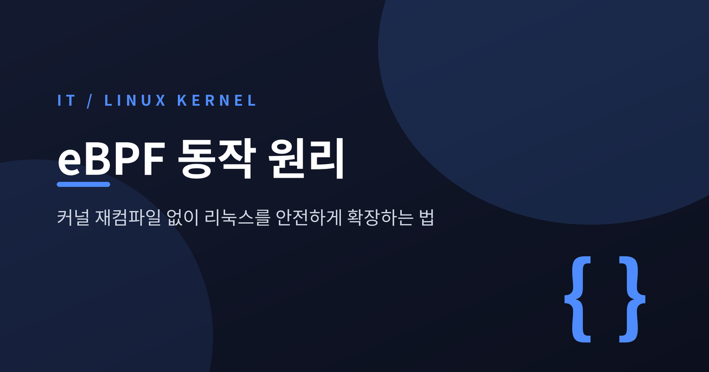
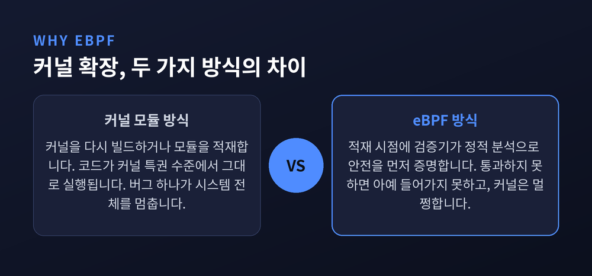
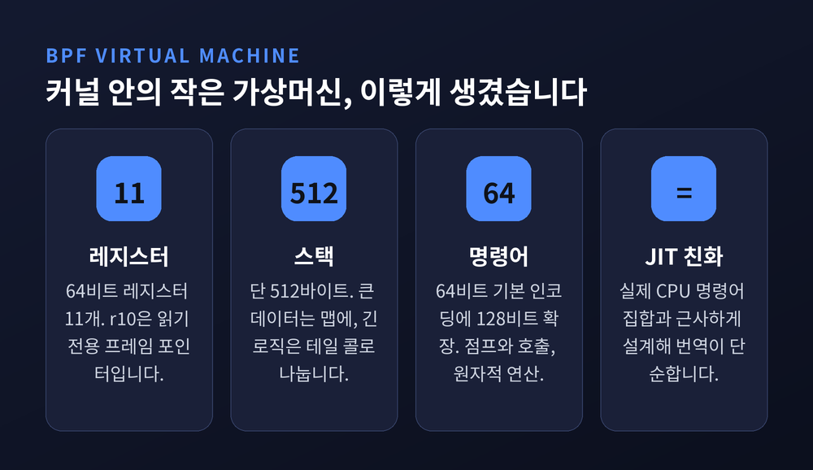
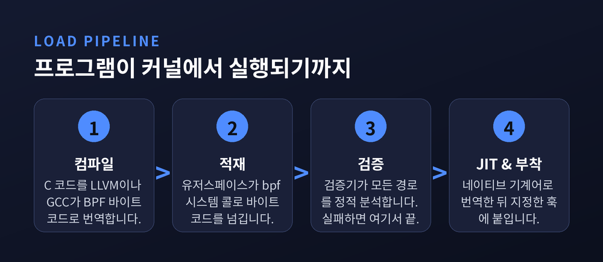
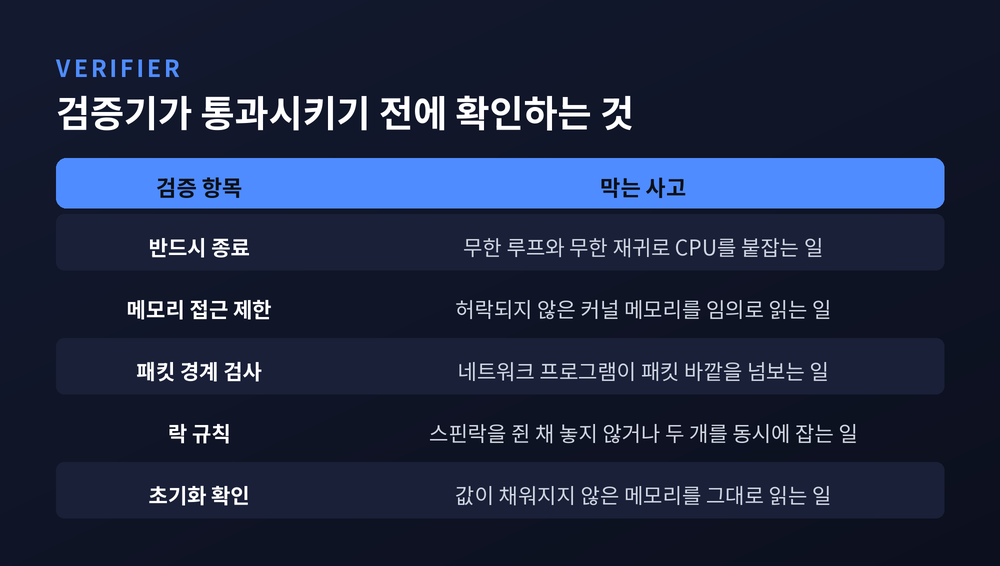
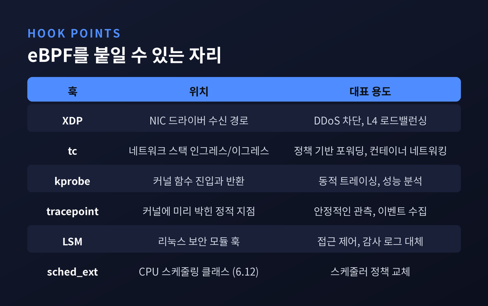
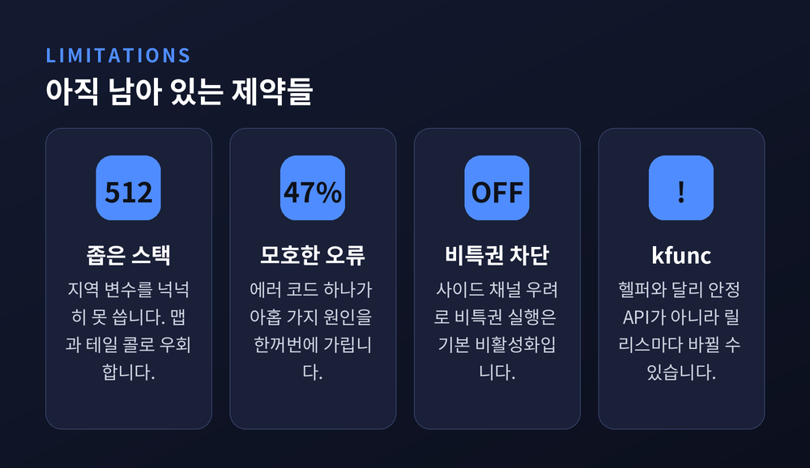

eBPF 동작 원리, 커널 재컴파일 없이 리눅스를 안전하게 확장하는 법

이번 글에서는 eBPF가 어떤 원리로 리눅스 커널 안에서 안전하게 돌아가는지 정리해 보겠습니다. 결론부터 말씀드리면, 핵심은 화려한 기능이 아니라 검증기(verifier) 라는 문지기 하나입니다.
세 줄 요약
- eBPF는 커널 안에 내장된 샌드박스 가상머신입니다. 커널을 다시 빌드하거나 재부팅하지 않고 코드를 밀어 넣습니다.
- 안전의 근거는 실행 전 정적 분석입니다. 검증기가 무한 루프와 잘못된 메모리 접근을 증명하지 못하면 아예 적재를 거부합니다.
- 통과한 코드는 JIT으로 네이티브 기계어가 됩니다. 그래서 안전하면서도 느리지 않습니다.
커널을 건드리는 일이 왜 그렇게 조심스러웠나
리눅스 커널에 없는 기능을 넣는 길은 오래도록 두 갈래였습니다.
커널 소스를 고쳐 다시 빌드하거나, 커널 모듈을 만들어 적재하는 것입니다. 둘 다 대가가 분명합니다. 앞의 방법은 재컴파일과 재부팅을 요구합니다. 뒤의 방법은 임의의 코드를 커널 특권 수준에서 그대로 실행합니다. 모듈에 버그가 하나 있으면 시스템 전체가 멈춥니다.
eBPF는 세 번째 길을 냅니다. 코드를 커널 안에서 실행하되, 실행 전에 안전을 증명하도록 요구합니다.

리누스 토르발스는 이 기술을 이렇게 평했습니다. "요청받기 전까지는 켜지지 않는 특화된 코드를 사람들이 만들 수 있게 해 준다는 점이 진짜 힘이다." 커널에 미리 다 넣어 둘 필요가 없다는 뜻입니다.
커널 안에 작은 가상머신이 하나 들어 있습니다
출발점은 1992년입니다. 로렌스 버클리 연구소의 스티븐 맥캔과 밴 제이컵슨이 BSD Packet Filter를 설계했습니다. 목적은 하나뿐이었습니다. 패킷을 유저스페이스로 복사하기 전에 커널 안에서 걸러 내는 것이었습니다. 32비트 레지스터 두 개와 작은 메모리 배열이 전부인 소박한 기계였습니다.
2014년 3월, 알렉세이 스타로보이토프가 이 낡은 인터프리터를 갈아엎습니다. 그 결과가 리눅스 3.18에 실립니다. 확장된 BPF, 곧 eBPF입니다.
지금의 가상머신은 이렇게 생겼습니다. 64비트 레지스터 11개(r0~r10), 프로그램 카운터, 그리고 512바이트짜리 스택입니다. r10은 읽기 전용이며 스택 최상단을 가리킵니다. 명령어는 64비트 기본 인코딩에 128비트 확장을 더해 산술, 비트 연산, 로드와 스토어, 조건·무조건 점프, 함수 호출, 원자적 연산을 지원합니다.

스택이 512바이트라는 점이 눈에 띕니다. 넉넉하지 않습니다. 대신 테일 콜이 있습니다. 같은 스택 프레임을 재사용하는 롱 점프로, 실행 컨텍스트를 통째로 바꾸는 방식이 execve() 시스템 콜과 닮았습니다. 덕분에 복잡한 로직을 여러 프로그램으로 쪼개 이어 붙일 수 있고, 프로그램 배열의 내용을 살아 있는 상태에서 교체해 무중단 업데이트도 가능합니다.
설계에는 일관된 원칙이 하나 있습니다. 실제 하드웨어 명령어 집합과 최대한 비슷하게 만든다는 것입니다. 이 선택 하나가 뒤에 나올 JIT을 쉽게 만듭니다.
프로그램이 커널에 들어가기까지
순서는 단순합니다.
C로 짠 코드를 LLVM이나 GCC가 BPF 바이트코드로 컴파일합니다. 유저스페이스 프로그램이 bpf() 시스템 콜로 이 바이트코드를 커널에 넘깁니다. 커널은 곧바로 실행하지 않습니다. 검증기에게 먼저 보냅니다. 통과하면 JIT이 네이티브 기계어로 바꾸고, 그제야 지정한 훅에 붙습니다.

거부되면 어떻게 될까요. 아무 일도 일어나지 않습니다. 프로그램은 커널에 들어가지 못하고 오류만 돌아옵니다. 커널은 멀쩡합니다.
검증기는 정확히 무엇을 막는가
검증기는 바이트코드를 정적 분석합니다. 프로그램의 가능한 모든 경로를 깊이 우선으로 훑으면서, 각 명령어의 실행을 추상 해석(abstract interpretation) 으로 시뮬레이션하고 레지스터와 스택의 상태를 추적합니다.
보장하는 항목은 다음과 같습니다.

- 프로그램은 합리적인 시간 안에 반드시 종료해야 합니다. 무한 루프도 무한 재귀도 안 됩니다.
- 임의의 메모리를 읽을 수 없습니다.
- 네트워크 프로그램은 패킷 경계 바깥을 넘볼 수 없습니다.
- 데드락이 없어야 합니다. 잡은 스핀락은 반드시 풀어야 하고, 한 번에 하나의 락만 잡을 수 있습니다.
- 초기화되지 않은 메모리를 읽을 수 없습니다.
한 가지 더 있습니다. BPF 프로그램은 커널 함수를 마음대로 호출하지 못합니다. 그렇게 두면 프로그램이 특정 커널 버전에 묶여 버리기 때문입니다. 대신 커널이 안정 API로 제공하는 헬퍼 함수 화이트리스트 안에서만 호출할 수 있습니다. 프로그램 유형에 따라 쓸 수 있는 헬퍼 목록도 달라집니다.
무한 루프 문제를 푼 방식
검증기는 정지 문제를 풀 수 없습니다. 증명하지 못하면 "오래 돌 것"이라고 가정하고 거부하는 쪽으로 기웁니다. 그래서 초기 설계는 아주 거칠었습니다. 역방향 점프 자체를 금지한 것입니다.
예전엔 루프를 쓰려면 손으로 펼치거나 #pragma unroll을 붙여야 했습니다. 지금은 그럴 필요가 없습니다. 커널 5.3에서 bounded loops가 들어왔기 때문입니다.
해법이 의외로 담백합니다. 루프를 특별 취급하는 로직을 넣은 게 아닙니다. 루프의 각 반복을 다른 상태들과 똑같은 하나의 상태로 놓고 전부 시뮬레이션합니다. 모든 반복을 다 탐색하거나, 복잡도 한계에 걸릴 때까지 계속합니다.
한계는 숫자로 정해져 있습니다. 커널 5.2 이전에는 프로그램 최대 4,096 명령어였습니다. 5.2부터 100만으로 올랐습니다. 검증기가 처리한 명령어 수가 이 값을 넘으면 프로그램이 너무 크다며 거절합니다.
이 상향을 가능하게 한 것이 상태 가지치기(state pruning) 입니다. 이미 검증한 상태를 기록해 두고, 나중에 동등한 상태에 도달하면 그 경로를 잘라 냅니다. 흥미로운 분석이 하나 있습니다. 네트워킹 계열 프로그램을 조사해 보니 저장된 상태의 80%는 끝내 한 번도 매칭되지 않았습니다. 그래서 가지치기 지점을 네 명령어마다에서 열 명령어마다로 바꾸고 쓸모없는 상태를 공격적으로 버리자, 검증기 성능이 최대 20% 좋아지고 검증 가능한 프로그램 길이가 3분의 1만큼 늘었습니다.
다만 루프에는 여전히 비용이 붙습니다. 검증기는 루프의 모든 순열을 검사합니다. 본문 20명령어짜리 루프를 100번 돌리면 그것만으로 수천 명령어가 예산에서 빠져나갑니다.
2025년 스타로보이토프는 이 100만이라는 숫자를 두고 이렇게 말했습니다. "2019년에 그냥 커 보였던 숫자였다." 그가 사용자에게 건넨 조언도 기억할 만합니다. 불필요한 인라인과 루프 언롤을 지우라는 것입니다. always_inline은 2017년 이후, #pragma unroll은 2019년 이후 도움이 되지 않는데도 인터넷에는 아직 그 안내가 돌아다닙니다.
안전한데 왜 느리지 않은가
답은 JIT입니다.
초기에는 바이트코드를 인터프리터로 돌렸습니다. 지금은 성능과 보안을 이유로 JIT 컴파일이 이를 대체했습니다. 검증을 통과한 바이트코드는 해당 아키텍처의 네이티브 기계어로 번역되어 실행됩니다.
앞서 언급한 설계 원칙이 여기서 값을 합니다. BPF 명령어 집합이 실제 하드웨어 ISA와 근사 동등하게 만들어져 있어, 번역이 거의 1:1로 떨어집니다.
상태는 맵에 담습니다
BPF 프로그램은 짧고, 호출이 끝나면 사라집니다. 그래서 상태를 담을 그릇이 따로 필요합니다. 그 그릇이 BPF 맵입니다.
커널 공간에 자리 잡은 키·값 저장소이고, 구현은 코어 커널이 제공합니다. 프로그램끼리도, 커널과 유저스페이스 사이에서도 공유됩니다. 해시 맵, 배열, CPU마다 사본을 두는 per-CPU 계열, LPM 트라이, 블룸 필터까지 30종이 넘습니다.
관측 도구에서 특히 많이 쓰이는 것이 링 버퍼입니다. 커널에서 유저스페이스로 큰 데이터를 FIFO로 흘려보내는 통로인데요. per-CPU 설계였던 이전 방식과 달리 단일 링이고, 유저스페이스는 epoll 계열 시스템 콜로 기다릴 수 있어 대기하는 동안 CPU를 쓰지 않습니다.
어디에 붙일 수 있나
붙일 자리는 생각보다 넓습니다.

- kprobe / uprobe — 커널 함수나 사용자 함수의 진입·반환 지점
- tracepoint — 커널에 미리 박아 둔 정적 관측 지점
- tc(traffic control) — 네트워크 스택의 인그레스·이그레스
- XDP — 네트워크 드라이버 수신 경로의 가장 이른 지점
- LSM — 리눅스 보안 모듈 훅. 구글이 2020년 3월 업스트림했고, GKE는 이것으로 audit을 대체합니다
- sched_ext — 리눅스 6.12에 병합된 새 스케줄링 클래스. CPU 스케줄러 정책 자체를 BPF 프로그램으로 쓰고 재부팅 없이 갈아 끼웁니다
이 중 XDP는 위치가 각별합니다. 패킷이 DMA로 커널 메모리에 올라온 직후, sk_buff가 할당되기 전입니다. 메모리 할당이 비싼 연산이라 그 앞을 잡은 것입니다.
효과는 수치로 나옵니다. CoNEXT '18에 실린 XDP 논문은 단일 코어에서 초당 2,400만 패킷 처리를 보고했습니다. 일반 네트워크 스택의 가장 빠른 모드보다 약 5배입니다. 레드햇은 자체 테스트에서 같은 조건의 단일 코어로 초당 2,600만 패킷을 떨어뜨렸다고 밝혔습니다. 측정 주체와 하드웨어가 다르니 두 숫자를 나란히 놓고 우열을 가릴 일은 아닙니다. 단일 코어에서 2천만 패킷대라는 자릿수로 받아들이면 충분합니다.
한 번 컴파일해서 여러 커널에서 돌리기
한동안 발목을 잡은 문제가 있었습니다. 커널 구조체의 필드 오프셋이 버전마다, 빌드 설정마다 달랐습니다. 그래서 실행할 바로 그 머신에서 커널 헤더를 가지고 컴파일해야 했습니다. 배포가 무거울 수밖에 없었습니다.
BTF(BPF Type Format) 와 CO-RE(Compile Once, Run Everywhere) 가 이 매듭을 풉니다.
BTF는 구조체 레이아웃과 필드 오프셋을 기술하는 메타데이터 포맷입니다. 2018년 11월 커널에 들어왔고, 같은 정보를 담는 DWARF보다 약 100배 작습니다. BTF가 켜진 커널은 이 정보를 커널 이미지 안에 품고 있습니다.
CO-RE는 그 위에서 돌아갑니다. Clang이 "이 명령어는 이 구조체의 이 필드를 읽으려 한다"는 재배치 정보를 바이트코드와 함께 내보냅니다. 적재 시점에 libbpf가 실행 중인 커널의 BTF를 읽고 오프셋을 그 커널에 맞게 패치합니다. 컴파일할 때의 커널과 레이아웃이 달라도 같은 바이너리가 그대로 동작합니다.
이미 여러분의 트래픽이 여기를 지나갑니다
추상적인 이야기로 들릴지 모르지만, 규모는 이미 큽니다.
메타의 L4 로드밸런서 Katran은 2017년 5월부터 가동 중입니다. 그 이후 facebook.com으로 향하는 모든 패킷이 eBPF와 XDP를 거칩니다.
Cilium은 쿠버네티스에서 kube-proxy를 대체합니다. iptables의 선형적 규칙 처리 대신 BPF 해시 맵으로 서비스 로드밸런싱을 구현해, 서비스와 엔드포인트가 아무리 많아져도 O(1) 조회를 유지합니다. 남북 트래픽에서는 XDP와 DSR, Maglev 일관 해싱까지 지원합니다.
보안 쪽에는 Falco가 있습니다. CNCF 졸업 프로젝트이고, 시스템 콜을 실시간으로 관찰해 규칙과 대조합니다. 애플과 쇼피파이가 이 도구를 씁니다. 탐지에서 한 걸음 더 나가 정책 위반 프로세스를 종료시키는 Tetragon도 있습니다.
관측 쪽에는 bpftrace가 있습니다. "커널을 위한 awk"로 불리는 고수준 트레이싱 언어입니다. 넷플릭스는 함대 전체의 네트워크 관측성에, 클라우드플레어는 로드밸런싱과 DDoS 방어에 이 기술을 씁니다. 마이크로소프트는 아예 eBPF를 윈도우 NT 커널로 포팅했습니다.
아쉬운 점도 분명합니다
좋은 이야기만 하면 균형이 맞지 않습니다.

가장 자주 언급되는 불편은 검증기와의 싸움입니다. 최근 학술 분석에 따르면 거부 사유의 47%가 EINVAL 을 반환합니다. 사실상 "뭔가 잘못됐다"는 말입니다. 하나의 오류 문자열이 최대 아홉 가지 서로 다른 근본 원인에 대응하는 경우도 있습니다. 개발자는 명확한 안내 없이 시행착오로 암묵적 제약을 맞춰 나가게 됩니다. 분석 대상 커밋 72개 중 27개가 "검증기 한계를 넘어 거부된 큰 프로그램을 여러 개로 쪼개는" 리팩터링이었습니다.
올바르게 작성된 프로그램이 거부되는 일도 생깁니다. 컴파일러 최적화가 포인터 타입을 가려 버리는 경우가 대표적입니다.
메인테이너 본인도 이 상황을 인정합니다. 스타로보이토프는 검증기의 루프 처리 설계를 "카드로 쌓은 집" 이라 부르며, verifier.c가 커널에서 가장 큰 파일이 되었으니 이제 물러서서 다시 쓸 방법을 생각할 때라고 말했습니다.
보안 쪽에도 그늘이 있습니다. eBPF는 Spectre 같은 마이크로아키텍처 사이드 채널 공격의 도구로 쓰인 전례가 있습니다. x86-64에서는 Spectre v1·v2·v4 완화책이 들어가 있지만, 커널 커뮤니티는 결국 비특권 eBPF를 기본값으로 비활성화했습니다. 지원되지 않는 아키텍처의 사용자를 보호하고 앞으로 나올 하드웨어 취약점의 영향을 제한하기 위해서입니다.
구조적 제약도 그대로 남아 있습니다. 스택은 여전히 512바이트입니다. kfunc는 헬퍼와 달리 안정 API가 아니어서 커널 릴리스마다 시그니처가 바뀔 수 있습니다. CO-RE도 BTF가 켜진 커널에서만 동작합니다.
정리하면 이렇습니다.
eBPF가 이룬 것은 새로운 언어도, 더 빠른 실행기도 아닙니다. 커널 확장이라는 위험한 행위에 "실행 전에 증명하라"는 조건을 붙인 것입니다. 그 조건 하나 때문에 커널 모듈은 감히 못 하던 일들이 가능해졌습니다.
물론 그 문지기는 아직 까다롭고, 때로는 멀쩡한 코드도 돌려보냅니다. 메인테이너조차 다시 쓰고 싶어 합니다.
그래도 방향은 분명해 보입니다. 커널을 다시 컴파일하지 않고도 커널을 바꿀 수 있다면, 앞으로 커널에 무엇을 더 넣을지 고민하는 대신 무엇을 훅으로 열어 둘지 고민하게 될 것입니다. 이미 스케줄러까지 그 목록에 올랐습니다. 다음은 무엇이 될지, 조용히 지켜볼 만합니다.